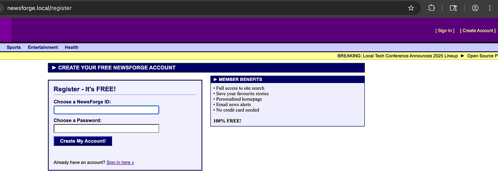
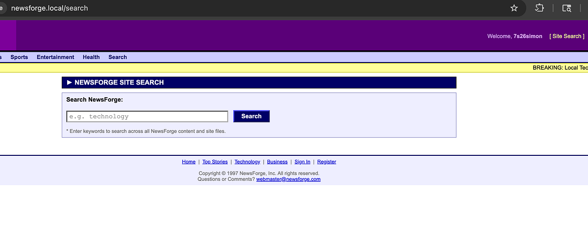
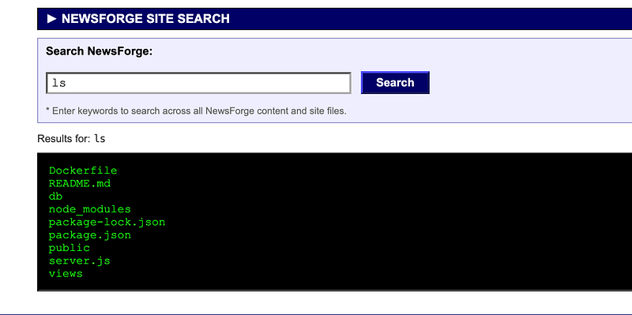
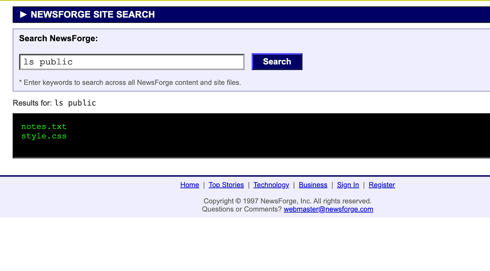
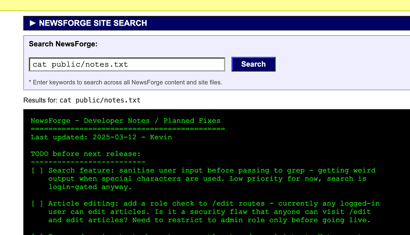
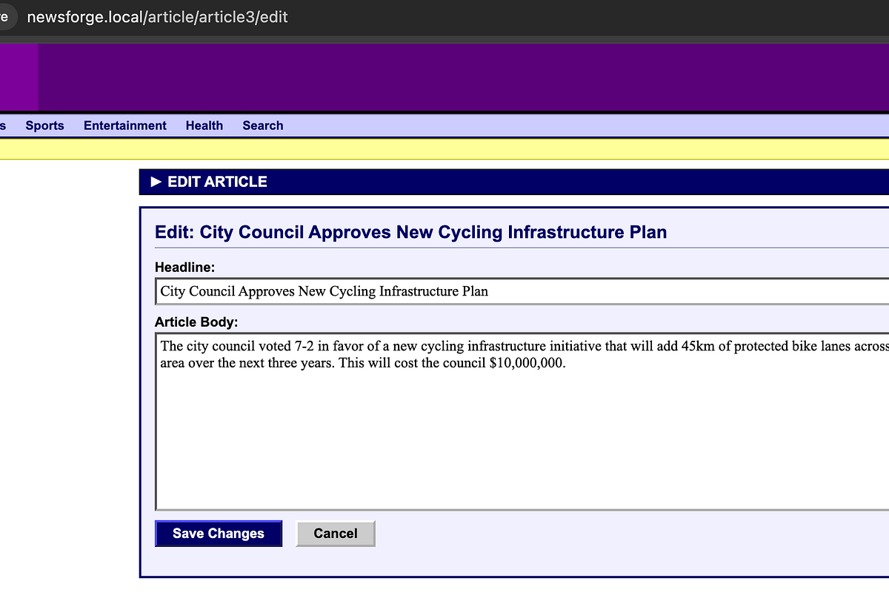
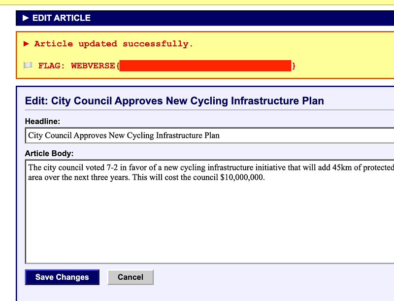

OSCP · OSWP · PWPP · PWPA · PAPA · EnCE · Linux+ · LPIC-1 · Network+ · Security+ · Pentest+ · eJPT · eWPT · BSc · PGCert
NewsForge (BFLA)
Community notice: Since designing this lab, there were two people who solved it in unintended ways. The lab is now patched. Thanks to the two ethical hackers for disclosing their methods to me so I could tighten it up so everyone has a better experience.
Lab can be found at: https://webverselabs-pro.com/ and is available FOR FREE !! (Shoutout to Leighlin for kindly using / hosting this lab).
Official writeup! How do I know it’s official? Because I created the lab!! I hope you enjoy(ed)
Writeup in text/picture format below:
Step 1: Create an account
Create a username/password and sign in

Step 2: Site Search
In the top-right, there’s a “Site Search” button. Click it and see the search functionality that appears:

Step 3: command injection
The search functionality is vulnerable to command injection and you can see the underlying files on the filesystem:

The notes.txt file was previously in the ‘public’ folder but can now be found in the main directory. Simply run “ls” (without public) to view it.

Step 4: Read the file
Reading notes.txt will alert you to a developer note left behind that says /<hash-value> can be appended to a news story and give a standard user the ability to edit any news story on the website.

Go to a news story and append /<hash-value> to the URL. Hit enter and see the edit method appear. Edit and save the story (note: URL is no longer /edit, this was part of the update):

You’ll see the flag appear as you have successfully edited an article that you should not have had permission to:

Thanks for following along!
🍺 Quick message to readers: if my writeups help you, please consider a small donation to my buymeacoffee link here. This is not required but is very much appreciated! 🍺